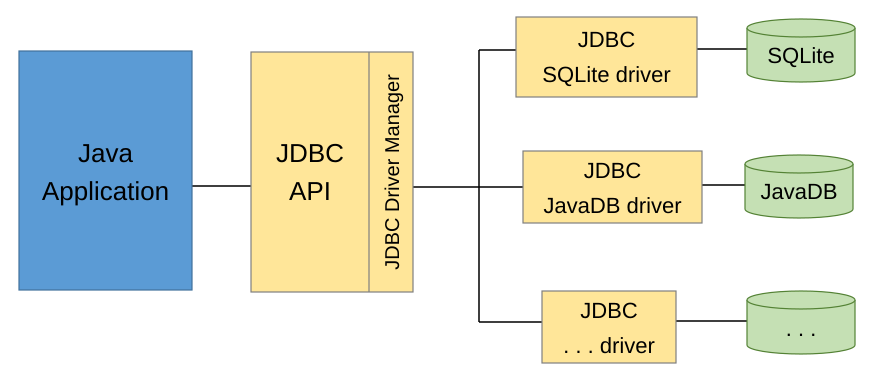

Core Java • SQL • JDBC 4.5 • Database Connections • Transactions • Performance • Spring Boot
JDBC (Java Database Connectivity) is the standard Java API used to connect to databases, execute SQL statements, retrieve and manipulate data, manage transactions, and interact with database-specific functionality through a common programming interface.
This guide covers JDBC from beginner to advanced level, including the major interfaces, classes, methods, and practical Java implementations.
JDBC defines a standard set of interfaces and classes that allow a Java application to communicate with relational databases such as PostgreSQL, MySQL, Oracle, SQL Server, and H2.
Instead of writing database-specific networking code, applications interact with JDBC APIs. A database-specific JDBC Driver implements those APIs and translates the application’s operations into the database’s communication protocol.

JDBC architecture
Java Application
Services • Repositories • Business logic
JDBC API
Connection • PreparedStatement • ResultSet
Database Server
SQL execution • Transactions • Persistent storage
For example, the following JDBC code can work with multiple relational databases when the SQL and data types are supported:
String sql = "SELECT id, name FROM users";
try (Connection con = dataSource.getConnection(); PreparedStatement ps = con.prepareStatement(sql);
ResultSet rs = ps.executeQuery()) {
while (rs.next()) {
System.out.println(rs.getLong("id"));
System.out.println(rs.getString("name"));
}
}The database-specific driver provides the implementations behind Connection, PreparedStatement, and ResultSet.
Important: JDBC standardizes database access, but it does not make all SQL dialects, database features, or data types identical.
JDBC is part of Java SE.
| Package | Purpose |
|---|---|
java.sql | Core JDBC APIs |
javax.sql | DataSource, connection pooling interfaces, distributed transactions, RowSet |
javax.sql.rowset | Standard RowSet implementations and factories |
javax.sql.rowset.serial | Serializable SQL data-type mappings |
javax.sql.rowset.spi | RowSet synchronization providers |
javax.transaction.xa | XA distributed transaction interfaces |
The Java module system contains java.sql, java.sql.rowset, and java.transaction.xa.
As of Java 27 (September 2026), the JDBC specification exposed by Java SE is JDBC 4.5. Its recent additions include JSON and DECFLOAT SQL type constants and AutoCloseable support for SQL LOB and related objects. Individual drivers may support different subsets of the specification.
Main JDBC API hierarchy
java.sql.Statement
General SQL execution interface
java.sql.PreparedStatement
Extends Statement; supports parameter binding
java.sql.CallableStatement
Extends PreparedStatement; supports stored procedures
This is an interface inheritance hierarchy, not a typical call sequence.
The core connection and result interfaces are separate. Connection creates statements, while executed statements provide ResultSet objects.
The following table organizes the important JDBC interfaces and classes by purpose.
| Category | Interfaces / classes |
|---|---|
| Driver management | Driver, DriverManager, DriverPropertyInfo |
| Connections | Connection, DataSource, ConnectionBuilder |
| SQL execution | Statement, PreparedStatement, CallableStatement |
| Query results | ResultSet |
| Transactions | Connection, Savepoint |
| Metadata | DatabaseMetaData, ResultSetMetaData, ParameterMetaData |
| SQL types | Types, JDBCType, SQLType |
| Date and time | Date, Time, Timestamp |
| Large objects | Blob, Clob, NClob, SQLXML |
| Structured values | Array, Struct, Ref, RowId, SQLData, SQLInput, SQLOutput |
| Errors | SQLException, SQLWarning, BatchUpdateException |
| Pooling | ConnectionPoolDataSource, PooledConnection, connection/statement event APIs |
| Distributed transactions | XADataSource, XAConnection, XAResource |
| RowSets | RowSet, JdbcRowSet, CachedRowSet, WebRowSet, FilteredRowSet, JoinRowSet |
| Advanced | ShardingKey, ShardingKeyBuilder, Wrapper |
We will examine the APIs individually and then combine them in a working application.
For practical examples, we will use PostgreSQL with Java 17+.
Maven dependency
A JDBC driver is an external dependency. JDBC interfaces themselves are included with the JDK.
Add this inside your Maven pom.xml:
<dependency>
<groupId>org.postgresql</groupId>
<artifactId>postgresql</artifactId>
<version>42.7.14</version>
</dependency>This is the PostgreSQL JDBC driver release published October 7, 2026.
Database setup
Run:
CREATE DATABASE companydb;Connect to companydb and create a table:
CREATE TABLE employees (
id BIGINT GENERATED ALWAYS AS IDENTITY
PRIMARY KEY,
name VARCHAR(100) NOT NULL,
email VARCHAR(150) UNIQUE NOT NULL,
salary NUMERIC(12, 2) NOT NULL,
created_at TIMESTAMP NOT NULL
DEFAULT CURRENT_TIMESTAMP
);First working JDBC program
void main(String[] args) throws SQLException {
String url = "jdbc:postgresql://localhost:5432/companydb";
String username = "postgres";
String password = System.getenv("DB_PASSWORD");
try (Connection con = DriverManager.getConnection(url, username, password)) {
System.out.println("Connected!");
String sql = """
SELECT id, name, salary
FROM employees
""";
try (PreparedStatement ps = con.prepareStatement(sql); ResultSet rs = ps.executeQuery()) {
while (rs.next()) {
long id = rs.getLong("id");
String name = rs.getString("name");
double salary = rs.getDouble("salary");
System.out.printf("%d | %s | %.2f%n", id, name, salary);
}
}
}
}This program demonstrates the three most frequently used JDBC operations:
DriverManager.getConnection() — establish a database connection.Connection.prepareStatement() — create an SQL command.PreparedStatement.executeQuery() — execute the query and return a ResultSet.ResultSet.next() moves the cursor forward, and the getter methods retrieve values from its current row.
For financial values such as salaries, use BigDecimal rather than double in production code to preserve decimal precision.
Driver and DriverManager APIs5.1 Driver interface
Package: java.sql.Driver
The Driver interface defines the contract that database-specific JDBC drivers must implement.
Important methods:
| Method | Description |
|---|---|
connect(url, properties) | Attempts to establish a database connection |
acceptsURL(url) | Checks whether the driver supports a JDBC URL |
getMajorVersion() | Driver major version |
getMinorVersion() | Driver minor version |
jdbcCompliant() | Reports JDBC compliance characteristics |
getPropertyInfo(url, props) | Describes supported connection properties |
getParentLogger() | Returns the parent logger |
You generally do not implement this interface yourself. Libraries such as PostgreSQL JDBC and MySQL Connector/J supply implementations.
5.2 DriverManager class
Package: java.sql.DriverManager
DriverManager manages registered JDBC drivers and helps applications establish connections.
Important methods:
DriverManager.getConnection(url); # Obtain database connection
DriverManager.getConnection(url, username, password);
DriverManager.getConnection(url, properties);
DriverManager.registerDriver(driver); # Manage drivers
DriverManager.deregisterDriver(driver);
DriverManager.getDriver(url);
DriverManager.getDrivers();
DriverManager.drivers(); # Stream<Driver>
DriverManager.setLoginTimeout(10); # Configuration
DriverManager.getLoginTimeout();Note that setLoginTimeout() is a global setting on DriverManager.
5.3 How JDBC finds the correct driver
Suppose the following drivers are available on the classpath:
org.postgresql.Driver
com.mysql.cj.jdbc.Driver
com.microsoft.sqlserver.jdbc.SQLServerDriverYou execute:
Connection con = DriverManager.getConnection("jdbc:postgresql://localhost:5432/companydb", "postgres", password);Conceptually:
DriverManager.getConnection(url)
Find a registered driver that can accept the URL
PostgreSQL driver establishes the connection
The exact discovery and connection mechanics are implemented by JDBC and the driver. acceptsURL() is a useful way to understand driver selection, although DriverManager is not required to invoke it before every connection attempt.
5.4 Why Class.forName() is usually unnecessary
Older JDBC code explicitly registered the driver:
Class.forName("org.postgresql.Driver");Modern JDBC drivers can be discovered automatically through the Java service-provider mechanism.
With a correctly packaged modern driver in the classpath, this is sufficient:
Connection con = DriverManager.getConnection(url, username, password);5.5 JDBC URLs
| Database | Example |
|---|---|
| PostgreSQL | jdbc:postgresql://localhost:5432/companydb |
| MySQL | jdbc:mysql://localhost:3306/companydb |
| SQL Server | jdbc:sqlserver://localhost:1433;databaseName=companydb |
| Oracle | jdbc:oracle:thin:@//localhost:1521/FREEPDB1 |
| H2 memory | jdbc:h2:mem:testdb |
These are illustrative connection strings. Production deployments require the appropriate authentication, TLS, and driver configuration.
Connection interface — complete explanationPackage: java.sql.Connection
The Connection interface represents a logical database session.
It is one of the most important JDBC interfaces because almost every operation happens through a connection.
A connection manages:
6.1 Important Connection methods
| Method | Purpose |
|---|---|
createStatement() | Creates a Statement |
prepareStatement(sql) | Creates a PreparedStatement |
prepareCall(sql) | Creates a CallableStatement |
setAutoCommit(boolean) | Controls automatic commits |
getAutoCommit() | Reads auto-commit setting |
commit() | Commits current transaction |
rollback() | Rolls back current transaction |
rollback(savepoint) | Rolls back to a savepoint |
setSavepoint() | Creates an unnamed savepoint |
setSavepoint(name) | Creates a named savepoint |
releaseSavepoint(savepoint) | Releases a savepoint |
setTransactionIsolation(level) | Sets transaction isolation |
getTransactionIsolation() | Reads isolation level |
setReadOnly(boolean) | Sets a read-only hint |
isReadOnly() | Reads read-only setting |
setCatalog(name) | Sets current catalog |
getCatalog() | Reads current catalog |
setSchema(schema) | Sets current schema |
getSchema() | Reads current schema |
getMetaData() | Returns DatabaseMetaData |
nativeSQL(sql) | Translates JDBC SQL syntax where supported |
isValid(timeout) | Validates connection |
isClosed() | Checks closed state |
close() | Closes logical connection |
setNetworkTimeout(executor, ms) | Sets network-operation timeout |
abort(executor) | Terminates connection |
getWarnings() | Returns connection warnings |
clearWarnings() | Clears warnings |
getClientInfo() | Returns client information |
setClientInfo(...) | Sets client information |
createBlob() | Creates Blob object |
createClob() | Creates Clob object |
createNClob() | Creates NClob object |
createSQLXML() | Creates SQLXML object |
createArrayOf(type, values) | Creates SQL array |
createStruct(type, attrs) | Creates SQL structured value |
getTypeMap() | Gets SQL user-defined type mappings |
setTypeMap(map) | Sets custom type mappings |
Additional APIs include beginRequest(), endRequest(), sharding-key methods, and identifier-quoting methods.
6.2 Example: configuring a connection
try (Connection con = DriverManager.getConnection(url, username, password)) {
con.setReadOnly(true);
con.setTransactionIsolation(Connection.TRANSACTION_READ_COMMITTED);
System.out.println("Auto commit: " + con.getAutoCommit());
System.out.println("Read only: " + con.isReadOnly());
System.out.println("Schema: " + con.getSchema());
System.out.println("Valid: " + con.isValid(5));
}Important distinctions:
setReadOnly(true) is primarily a hint and must not be treated as a universally enforced security boundary.
isValid(5) asks the driver to validate the connection with a timeout of five seconds. It does not guarantee that the connection will remain available for the next operation.
close() releases the application-owned JDBC resource. For a pooled connection, this normally returns the logical connection to its pool rather than immediately closing the physical network connection.
6.3 Connection with try-with-resources
The recommended pattern is:
try (Connection con = dataSource.getConnection()) {
# Use connection
} # Automatic closeBecause Connection implements AutoCloseable, Java closes it when the scope ends, even when an exception is thrown.
The same applies to Statement, PreparedStatement, and ResultSet.
Always keep resource ownership clear. Do not close a framework-managed connection behind Spring’s transaction manager.
Statement interfacePackage: java.sql.Statement
Statement executes SQL commands supplied as strings.
Statement stmt = con.createStatement();7.1 Important methods
| Method | Description |
|---|---|
executeQuery(sql) | Executes a query and returns a ResultSet |
executeUpdate(sql) | Executes DML or DDL; returns update count |
execute(sql) | General execution method |
executeLargeUpdate(sql) | Returns a long update count |
addBatch(sql) | Adds SQL to a batch |
executeBatch() | Executes batch; returns int[] |
executeLargeBatch() | Executes batch; returns long[] |
clearBatch() | Clears batch commands |
getResultSet() | Obtains current query result |
getUpdateCount() | Obtains current update count |
getLargeUpdateCount() | Obtains large update count |
getMoreResults() | Advances through multiple results |
getGeneratedKeys() | Gets generated keys |
setQueryTimeout(seconds) | Sets query timeout |
setFetchSize(rows) | Sets fetch-size hint |
setMaxRows(rows) | Limits JDBC result row count |
setMaxFieldSize(bytes) | Limits specified field sizes |
setFetchDirection(direction) | Sets fetch direction hint |
cancel() | Requests cancellation |
closeOnCompletion() | Closes when dependent result sets close |
getWarnings() | Obtains warnings |
close() | Releases statement resources |
7.2 executeQuery() example
try (Statement stmt = con.createStatement(); ResultSet rs = stmt.executeQuery("SELECT id, name FROM employees")) {
while (rs.next()) {
System.out.println(rs.getLong("id") + " " + rs.getString("name"));
}
}7.3 executeUpdate() example
try (Statement stmt = con.createStatement()) {
int affectedRows = stmt.executeUpdate("""
UPDATE employees
SET salary = salary + 1000
WHERE id = 10
""");
System.out.println("Updated rows: " + affectedRows);
}For INSERT, UPDATE, or DELETE, the return value generally indicates the number of affected rows. For SQL commands such as DDL that do not return a row count, the returned value is often zero.
7.4 execute() vs executeQuery() vs executeUpdate()
| Method | SQL use | Return |
|---|---|---|
executeQuery() | Query returning rows | ResultSet |
executeUpdate() | DML or DDL without result set | int |
executeLargeUpdate() | DML with potentially large counts | long |
execute() | General SQL, including multiple results | boolean |
A common misunderstanding is that execute() returns whether SQL succeeded.
It does not.
boolean result = stmt.execute(sql);true means the first result is a ResultSet.false means the first result is an update count or there are no results.SQLException.7.5 Handling multiple results
Some stored procedures and SQL commands return multiple result sets and update counts.
boolean hasResultSet = stmt.execute(sql);
while (true) {
if (hasResultSet) {
try (ResultSet rs = stmt.getResultSet()) {
while (rs.next()) {
# Process current result set
}
}
} else {
int count = stmt.getUpdateCount();
if (count == -1) {
break;
}
System.out.println("Affected rows: " + count);
}
hasResultSet = stmt.getMoreResults();
}7.6 Why ordinary Statement is unsafe for user input
Consider:
String email = userInput;
String sql = "SELECT * FROM employees WHERE email = '" + email + "'";
stmt.executeQuery(sql);If userInput contains SQL syntax, it can change the intended query.
This is an SQL injection vulnerability.
Use PreparedStatement for values supplied by users, APIs, or other untrusted sources.
PreparedStatement interfacePackage: java.sql.PreparedStatement
PreparedStatement extends Statement and supports SQL commands with parameters.
It is generally the preferred JDBC interface for application queries and updates.
8.1 How it works
SELECT *
FROM employees
WHERE id = ?
AND salary >= ?Parameters are represented by ? placeholders.
PreparedStatement ps = con.prepareStatement(sql);
ps.setLong(1, 10L);
ps.setBigDecimal(2, new BigDecimal("50000"));Parameter numbering starts at 1, not 0.
The driver binds the parameters with their SQL values and types. Depending on the driver, database, and configuration, the statement may be prepared on the server, on the client, or through a combination of both. Preparation does not universally guarantee server-side execution-plan reuse.
8.2 Important PreparedStatement methods
| Method | Purpose |
|---|---|
setInt(index, value) | Bind integer |
setLong(index, value) | Bind long |
setString(index, value) | Bind string |
setBoolean(index, value) | Bind boolean |
setDouble(index, value) | Bind double |
setBigDecimal(index, value) | Bind decimal |
setDate(index, value) | Bind SQL date |
setTime(index, value) | Bind SQL time |
setTimestamp(index, value) | Bind SQL timestamp |
setObject(index, value) | Bind object |
setObject(index, value, type) | Bind with explicit SQL type |
setNull(index, sqlType) | Bind SQL NULL |
setBytes(index, value) | Bind binary data |
setBinaryStream(...) | Bind binary stream |
setCharacterStream(...) | Bind text stream |
setBlob(...) | Bind BLOB |
setClob(...) | Bind CLOB |
setArray(...) | Bind SQL array |
executeQuery() | Execute parameterized query |
executeUpdate() | Execute parameterized update |
execute() | Execute general command |
addBatch() | Add current parameter set to batch |
clearParameters() | Clear parameters |
getParameterMetaData() | Inspect SQL parameters |
getMetaData() | Inspect result columns, when available |
8.3 SELECT with parameters
String sql = """
SELECT id, name, salary
FROM employees
WHERE salary >= ?
ORDER BY salary DESC
""";
try (PreparedStatement ps = con.prepareStatement(sql)) {
ps.setBigDecimal(1, new BigDecimal("50000.00"));
try (ResultSet rs = ps.executeQuery()) {
while (rs.next()) {
System.out.println(rs.getString("name"));
}
}
}8.4 INSERT with parameters
String sql = """
INSERT INTO employees(name, email, salary)
VALUES (?, ?, ?)
""";
try (PreparedStatement ps = con.prepareStatement(sql)) {
ps.setString(1, "Rahul");
ps.setString(2, "rahul@example.com");
ps.setBigDecimal(3, new BigDecimal("75000.00"));
int rows = ps.executeUpdate();
System.out.println("Inserted: " + rows);
}8.5 UPDATE with parameters
String sql = """
UPDATE employees
SET salary = ?
WHERE id = ?
""";
try (PreparedStatement ps = con.prepareStatement(sql)) {
ps.setBigDecimal(1, new BigDecimal("85000.00"));
ps.setLong(2, 1L);
int updated = ps.executeUpdate();
}8.6 DELETE with parameters
String sql = "DELETE FROM employees WHERE id = ?";
try (PreparedStatement ps = con.prepareStatement(sql)) {
ps.setLong(1, 1L);
int deleted = ps.executeUpdate();
}8.7 Handling NULL values
ps.setNull(1, Types.VARCHAR);Or, where the driver supports the mapping:
ps.setObject(1, null, JDBCType.VARCHAR);Prefer an explicit SQL type for ambiguous NULL parameters.
8.8 Retrieving generated primary keys
String sql = """
INSERT INTO employees(name, email, salary)
VALUES (?, ?, ?)
""";
try (PreparedStatement ps = con.prepareStatement(sql, Statement.RETURN_GENERATED_KEYS)) {
ps.setString(1, "Anita");
ps.setString(2, "anita@example.com");
ps.setBigDecimal(3, new BigDecimal("90000"));
ps.executeUpdate();
try (ResultSet keys = ps.getGeneratedKeys()) {
if (keys.next()) {
long id = keys.getLong(1);
System.out.println("New ID: " + id);
}
}
}Generated-key support and which columns are returned vary by driver.
For PostgreSQL, another common approach is INSERT ... RETURNING id, executed as a query.
8.9 Advantages of PreparedStatement
Limitation: ? placeholders bind data values, not SQL identifiers such as table names, column names, or sort directions. Dynamic identifiers must be validated against an allowlist.
CallableStatement interfacePackage: java.sql.CallableStatement
CallableStatement extends PreparedStatement and supports stored procedure calls, including input and output parameters.
9.1 Common methods
| Method | Description |
|---|---|
registerOutParameter(index, type) | Registers OUT parameter |
setXxx(index, value) | Sets IN parameter |
getXxx(index) | Reads OUT parameter |
execute() | Executes procedure |
executeQuery() | Executes procedure returning result set |
getObject(index) | Reads object-valued OUT parameter |
wasNull() | Checks if last OUT value was NULL |
9.2 Example with IN and OUT parameters
Suppose the database exposes a stored procedure named get_employee_salary with an employee ID as an IN parameter and salary as an OUT parameter.
String call = "{call get_employee_salary(?, ?)}";
try (CallableStatement cs = con.prepareCall(call)) {
cs.setLong(1, 10L); # IN parameter
cs.registerOutParameter(2, Types.DECIMAL); # OUT parameter
cs.execute();
BigDecimal salary = cs.getBigDecimal(2);
System.out.println(salary);
}The {call ...} syntax is JDBC escape syntax. How a procedure is defined and how its OUT parameters behave depends on the database.
9.3 Stored functions
For database functions that return scalar values, JDBC also defines:
String call = "{? = call calculate_bonus(?)}";
try (CallableStatement cs = con.prepareCall(call)) {
cs.registerOutParameter(1, Types.DECIMAL);
cs.setLong(2, 10L);
cs.execute();
BigDecimal bonus = cs.getBigDecimal(1);
}PostgreSQL functions, PostgreSQL procedures, SQL Server procedures, and Oracle stored routines have different invocation rules. Use the syntax and driver configuration appropriate to your database.
ResultSet interface — complete explanationPackage: java.sql.ResultSet
A ResultSet represents a tabular result returned by a query.
It provides a cursor for navigating records and getter methods for extracting column values.
10.1 How the cursor works
Suppose a query returns:
| id | name | salary |
|---|---|---|
| 1 | Rahul | 50000 |
| 2 | Anita | 70000 |
| 3 | Priya | 90000 |
Interactive ResultSet cursor
Before firstInitially, the cursor is positioned before the first row.
ResultSet rs = ps.executeQuery();
while (rs.next()) {
long id = rs.getLong("id");
String name = rs.getString("name");
}Each next() call advances the cursor. When it reaches the end, next() returns false.
10.2 ResultSet getter methods
| Method | Java type |
|---|---|
getString() | String |
getInt() | int |
getLong() | long |
getShort() | short |
getFloat() | float |
getDouble() | double |
getBigDecimal() | BigDecimal |
getBoolean() | boolean |
getBytes() | byte[] |
getDate() | java.sql.Date |
getTime() | java.sql.Time |
getTimestamp() | java.sql.Timestamp |
getObject() | Object |
getObject(column, Class<T>) | Requested Java type |
getBlob() | Blob |
getClob() | Clob |
getArray() | SQL Array |
getBinaryStream() | InputStream |
getCharacterStream() | Reader |
Example:
long id = rs.getLong(1);
String name = rs.getString("name");
BigDecimal salary = rs.getBigDecimal("salary");
LocalDateTime created = rs.getObject("created_at", LocalDateTime.class);Column indexes start at 1.
Accessing columns by name is often easier to maintain, while column indexes can avoid name lookup overhead in some drivers.
10.3 Handling SQL NULL correctly
Primitive JDBC getters cannot return Java null.
For example:
int managerId = rs.getInt("manager_id");If the SQL value is NULL, the getter returns 0.
Use wasNull() to distinguish NULL from a real zero.
int value = rs.getInt("manager_id");
Integer managerId = rs.wasNull() ? null : value;wasNull() refers to the most recently retrieved column value, so call it immediately after the relevant getter.
Another option is:
Integer managerId = rs.getObject("manager_id", Integer.class);This relies on support for the requested type conversion.
10.4 ResultSet types
JDBC supports three cursor types.
| Type | Behavior |
|---|---|
TYPE_FORWARD_ONLY | Forward-only navigation |
TYPE_SCROLL_INSENSITIVE | Scrollable; generally insensitive to concurrent changes |
TYPE_SCROLL_SENSITIVE | Scrollable; may reflect concurrent changes |
Example:
Statement stmt = con.createStatement(ResultSet.TYPE_SCROLL_INSENSITIVE, ResultSet.CONCUR_READ_ONLY);By default, a JDBC ResultSet is forward-only and read-only. Oracle Docs
10.5 Cursor navigation methods
| Method | Action |
|---|---|
next() | Next row |
previous() | Previous row |
first() | First row |
last() | Last row |
beforeFirst() | Before first row |
afterLast() | After last row |
absolute(n) | Move to absolute row |
relative(n) | Move relative to current row |
getRow() | Current row number |
isFirst() | Checks first-row position |
isLast() | Checks last-row position |
isBeforeFirst() | Checks before-first position |
isAfterLast() | Checks after-last position |
These operations have restrictions depending on the ResultSet type.
try (Statement stmt = con.createStatement(ResultSet.TYPE_SCROLL_INSENSITIVE, ResultSet.CONCUR_READ_ONLY);
ResultSet rs = stmt.executeQuery("SELECT id, name FROM employees ORDER BY id")) {
if (rs.absolute(3)) {
System.out.println(rs.getString("name"));
}
if (rs.previous()) {
System.out.println(rs.getString("name"));
}
}TYPE_SCROLL_SENSITIVE and some scrolling operations are not supported equally by all database drivers.
10.6 ResultSet concurrency modes
JDBC supports two concurrency modes:
ResultSet.CONCUR_READ_ONLY
ResultSet.CONCUR_UPDATABLECONCUR_UPDATABLE allows some ResultSets to update underlying rows.
Example:
try (Statement stmt = con.createStatement(ResultSet.TYPE_SCROLL_INSENSITIVE, ResultSet.CONCUR_UPDATABLE);
ResultSet rs = stmt.executeQuery("SELECT id, name FROM employees")) {
if (rs.next()) {
rs.updateString("name", "Updated Name");
rs.updateRow();
}
}Additional update APIs:
rs.updateInt(...);
rs.updateString(...);
rs.updateObject(...);
rs.updateRow();
rs.deleteRow();
rs.moveToInsertRow();
rs.insertRow();
rs.moveToCurrentRow();
rs.cancelRowUpdates();
rs.refreshRow();Whether a query produces an updatable ResultSet depends on driver support and query structure. Complex joins, aggregations, and some projections may not be updatable.
For typical application CRUD, explicit SQL through PreparedStatement is easier to reason about.
10.7 ResultSet holdability
These constants control cursor behavior across commits:
ResultSet.HOLD_CURSORS_OVER_COMMIT
ResultSet.CLOSE_CURSORS_AT_COMMITExample:
Statement stmt = con.createStatement(ResultSet.TYPE_FORWARD_ONLY, ResultSet.CONCUR_READ_ONLY,
ResultSet.CLOSE_CURSORS_AT_COMMIT);Support is database-dependent. A holdable cursor may impose additional memory or database resource costs.
Databases use SQL types, while Java applications use Java types.
JDBC maps between the two.
11.1 Common mappings
| SQL type | Recommended Java type |
|---|---|
SMALLINT | short / Short |
INTEGER | int / Integer |
BIGINT | long / Long |
REAL | float / Float |
DOUBLE PRECISION | double / Double |
DECIMAL, NUMERIC | BigDecimal |
CHAR, VARCHAR | String |
BOOLEAN | boolean / Boolean |
DATE | LocalDate |
TIME | LocalTime |
TIMESTAMP | LocalDateTime |
TIMESTAMP WITH TIME ZONE | OffsetDateTime where supported |
BINARY, VARBINARY | byte[] |
BLOB | Blob |
CLOB | Clob |
ARRAY | java.sql.Array |
XML | SQLXML |
Driver and database conversions may vary, particularly for timezone, JSON, UUID, and vendor-specific types.
11.2 java.sql.Types vs java.sql.JDBCType
Types provides integer constants representing standard JDBC SQL types.
Types.INTEGER
Types.VARCHAR
Types.DECIMAL
Types.TIMESTAMPJDBCType is an enum implementing SQLType.
JDBCType.INTEGER
JDBCType.VARCHAR
JDBCType.DECIMAL
JDBCType.TIMESTAMPExample:
ps.setObject(1, new BigDecimal("1500.00"), JDBCType.DECIMAL);Java 26 introduced Types.JSON, Types.DECFLOAT, JDBCType.JSON, and JDBCType.DECFLOAT. Their availability in a specific driver is a separate question. Oracle
11.3 Modern Java date/time mapping
Prefer java.time APIs in modern applications.
LocalDate date = LocalDate.now();
LocalDateTime timestamp = LocalDateTime.now();
ps.setObject(1, date);
ps.setObject(2, timestamp);Reading:
LocalDate date = rs.getObject("joining_date", LocalDate.class);
LocalDateTime timestamp = rs.getObject("created_at", LocalDateTime.class);Legacy JDBC types still exist:
java.sql.Date
java.sql.Time
java.sql.TimestampExample:
java.sql.Date sqlDate = java.sql.Date.valueOf(LocalDate.now());For timestamps representing global instants, define an explicit UTC/timezone policy. Do not assume a database TIMESTAMP without timezone preserves an absolute instant.
Batch processing executes multiple SQL commands through a JDBC statement.
It can reduce network round trips and improve write throughput.
12.1 Batch with Statement
try (Statement stmt = con.createStatement()) {
stmt.addBatch("""
UPDATE employees
SET salary = 50000
WHERE id = 1
""");
stmt.addBatch("""
UPDATE employees
SET salary = 60000
WHERE id = 2
""");
int[] results = stmt.executeBatch();
}12.2 Batch with PreparedStatement
For repeated inserts, this is typically preferable.
String sql = """
INSERT INTO employees(name, email, salary)
VALUES (?, ?, ?)
""";
try (PreparedStatement ps = con.prepareStatement(sql)) {
for (int i = 1; i <= 1000; i++) {
ps.setString(1, "Employee " + i);
ps.setString(2, "employee" + i + "@example.com");
ps.setBigDecimal(3, new BigDecimal("50000"));
ps.addBatch();
}
int[] counts = ps.executeBatch();
}Actual performance depends on whether the driver rewrites batches, pipelines commands, or sends them sequentially.
12.3 Understanding batch update counts
executeBatch() returns an array of integers.
Entries may contain:
Statement.SUCCESS_NO_INFO (-2): operation succeeded, count unavailable.Statement.EXECUTE_FAILED (-3): operation failed, if the driver continued processing.A batch failure may throw BatchUpdateException, which provides partial update counts. Drivers differ in whether they continue executing subsequent commands.
12.4 Transactional batch example
try (Connection con = dataSource.getConnection()) {
con.setAutoCommit(false);
try (PreparedStatement ps = con.prepareStatement(sql)) {
for (Employee emp : employees) {
ps.setString(1, emp.name());
ps.setString(2, emp.email());
ps.setBigDecimal(3, emp.salary());
ps.addBatch();
}
ps.executeBatch();
con.commit();
} catch (SQLException e) {
try {
con.rollback();
} catch (SQLException rollbackError) {
e.addSuppressed(rollbackError);
}
throw e;
}
}This provides application-controlled transaction boundaries for the batch, assuming the database tables and SQL operations participate in transactional behavior.
For millions of records, batch in bounded chunks rather than adding everything to one enormous batch.
A transaction groups several database operations into one logical unit.
For example, transferring money involves:
If the credit fails, the debit must be rolled back.
13.1 Auto-commit mode
By default, JDBC connections start with auto-commit enabled.
con.getAutoCommit(); # Typically true by defaultWith auto-commit enabled, each statement is committed automatically according to JDBC’s statement-completion rules.
Disable auto-commit for explicit transactions.
con.setAutoCommit(false);Then:
con.commit(); # Save changes
con.rollback(); # Undo transaction13.2 Transaction lifecycle
setAutoCommit(false)
Execute SQL statements inside transaction
Did every operation succeed?
commit()
Changes become committed
rollback()
Uncommitted changes are discarded
13.3 Complete money-transfer example
First create the table in PostgreSQL:
CREATE TABLE accounts (
id BIGINT PRIMARY KEY,
balance NUMERIC(15, 2) NOT NULL
CHECK (balance >= 0)
);
INSERT INTO accounts(id, balance)
VALUES
(1, 10000.00),
(2, 5000.00);Java implementation:
public class TransferService {
private DataSource dataSource;
public TransferService(DataSource dataSource) {
this.dataSource = dataSource;
}
public void transfer(long fromId, long toId, BigDecimal amount) throws SQLException {
if (fromId == toId) {
throw new IllegalArgumentException("Accounts must be different");
}
if (amount.signum() <= 0) {
throw new IllegalArgumentException("Amount must be positive");
}
String debitSql = """
UPDATE accounts
SET balance = balance - ?
WHERE id = ?
AND balance >= ?
""";
String creditSql = """
UPDATE accounts
SET balance = balance + ?
WHERE id = ?
""";
try (Connection con = dataSource.getConnection()) {
con.setAutoCommit(false);
try (PreparedStatement debit = con.prepareStatement(debitSql);
PreparedStatement credit = con.prepareStatement(creditSql)) {
debit.setBigDecimal(1, amount);
debit.setLong(2, fromId);
debit.setBigDecimal(3, amount);
if (debit.executeUpdate() != 1) {
throw new SQLException("Insufficient funds or source missing");
}
credit.setBigDecimal(1, amount);
credit.setLong(2, toId);
if (credit.executeUpdate() != 1) {
throw new SQLException("Destination account not found");
}
con.commit();
} catch (SQLException | RuntimeException ex) {
try {
con.rollback();
} catch (SQLException rollbackError) {
ex.addSuppressed(rollbackError);
}
throw ex;
}
}
}
}The conditional debit prevents a negative balance even when multiple transactions compete to debit the same account, assuming the database enforces the update atomically.
For a production transfer service, additionally consider deadlock retries, fixed currency scales, idempotency keys, transfer records, reconciliation, authorization, and a consistent account-locking order.
13.4 Transaction isolation levels
JDBC defines these isolation constants:
Connection.TRANSACTION_READ_UNCOMMITTED
Connection.TRANSACTION_READ_COMMITTED
Connection.TRANSACTION_REPEATABLE_READ
Connection.TRANSACTION_SERIALIZABLE
Connection.TRANSACTION_NONECommon textbook behavior:
| Isolation level | Dirty reads | Non-repeatable reads | Phantoms |
|---|---|---|---|
| Read Uncommitted | Possible | Possible | Possible |
| Read Committed | Prevented | Possible | Possible |
| Repeatable Read | Prevented | Prevented | Standard permits |
| Serializable | Prevented | Prevented | Prevented |
These are standardized guarantees, not a precise description of every database implementation. For example, PostgreSQL’s Repeatable Read offers a stronger snapshot guarantee against phantom reads than the minimum isolation-level table suggests.
Set isolation:
con.setTransactionIsolation(Connection.TRANSACTION_SERIALIZABLE);A higher isolation level can increase contention and cause serialization failures that must be retried safely.
13.5 Savepoint interface
A savepoint allows partial rollback inside a transaction.
con.setAutoCommit(false);
Savepoint savepoint = null;
try {
# SQL operation 1
savepoint = con.setSavepoint("AFTER_STEP_1");
# SQL operation 2
con.rollback(savepoint);
# SQL operation 3
con.commit();
} catch (SQLException e) {
con.rollback();
throw e;
}Key API methods:
Savepoint sp = con.setSavepoint();
Savepoint named = con.setSavepoint("CHECKPOINT");
con.rollback(named);
con.releaseSavepoint(named);A rollback to a savepoint does not terminate the whole transaction. Database and driver support must be checked.
JDBC metadata APIs allow applications to inspect the database, query structure, and statement parameters dynamically.
There are three key interfaces.
14.1 DatabaseMetaData
Package: java.sql.DatabaseMetaData
Provides details about the database system and its supported features.
DatabaseMetaData meta = con.getMetaData();
System.out.println(meta.getDatabaseProductName());
System.out.println(meta.getDatabaseProductVersion());
System.out.println(meta.getDriverName());
System.out.println(meta.getDriverVersion());Important methods:
| Method | Purpose |
|---|---|
getDatabaseProductName() | Database name |
getDatabaseProductVersion() | Database version |
getDriverName() | Driver name |
getDriverVersion() | Driver version |
getURL() | Connection URL |
getUserName() | Current username |
getTables(...) | Lists tables |
getColumns(...) | Lists columns |
getPrimaryKeys(...) | Lists primary keys |
getImportedKeys(...) | Lists foreign keys imported by table |
getExportedKeys(...) | Lists foreign keys referencing table |
getIndexInfo(...) | Lists index information |
getProcedures(...) | Lists stored procedures |
getFunctions(...) | Lists functions |
getSchemas() | Lists schemas |
getCatalogs() | Lists catalogs |
supportsTransactions() | Checks transaction support |
supportsBatchUpdates() | Checks batch support |
supportsSavepoints() | Checks savepoint support |
supportsResultSetType(...) | Checks cursor-type support |
supportsSharding() | Checks JDBC sharding support |
Example: discover columns.
DatabaseMetaData meta = con.getMetaData();
try (ResultSet columns = meta.getColumns(null, "public", "employees", null)) {
while (columns.next()) {
String name = columns.getString("COLUMN_NAME");
String type = columns.getString("TYPE_NAME");
System.out.println(name + " : " + type);
}
}This is useful for database explorers, schema migration tools, query generators, and database introspection utilities.
14.2 ResultSetMetaData
Package: java.sql.ResultSetMetaData
Provides information about the columns returned by a query.
ResultSetMetaData meta = rs.getMetaData();
int count = meta.getColumnCount();
for (int i = 1; i <= count; i++) {
System.out.println(meta.getColumnLabel(i) + " : " + meta.getColumnTypeName(i));
}Important methods:
| Method | Description |
|---|---|
getColumnCount() | Number of columns |
getColumnName(i) | Column name |
getColumnLabel(i) | Column label/alias |
getColumnType(i) | JDBC SQL type integer |
getColumnTypeName(i) | SQL type name |
getColumnClassName(i) | Java class name |
getPrecision(i) | Numeric precision |
getScale(i) | Decimal scale |
isNullable(i) | NULL allowance |
isAutoIncrement(i) | Auto-increment characteristic |
isReadOnly(i) | Read-only status |
isWritable(i) | Writable status |
getTableName(i) | Associated table name if available |
14.3 Dynamic result printer
ResultSetMetaData meta = rs.getMetaData();
int columnCount = meta.getColumnCount();
while (rs.next()) {
for (int i = 1; i <= columnCount; i++) {
Object value = rs.getObject(i);
String name = meta.getColumnLabel(i);
System.out.printf("%s=%s ", name, value);
}
System.out.println();
}This is similar to the generic result processing used by SQL clients and database tools.
14.4 ParameterMetaData
Package: java.sql.ParameterMetaData
Describes the parameters accepted by a PreparedStatement.
String sql = """
SELECT *
FROM employees
WHERE id = ?
AND salary > ?
""";
try (PreparedStatement ps = con.prepareStatement(sql)) {
ParameterMetaData meta = ps.getParameterMetaData();
System.out.println(meta.getParameterCount());
}Important methods:
getParameterCount()
getParameterType(index)
getParameterTypeName(index)
getParameterClassName(index)
getPrecision(index)
getScale(index)
isNullable(index)
getParameterMode(index)
isSigned(index)Some drivers provide incomplete metadata for untyped SQL placeholders, so do not assume all parameter details are available before execution.
Package: java.sql
Most JDBC operations report errors through SQLException.
15.1 Exception hierarchy
Exception
|
+-- SQLException
|
+-- SQLTransientException
| +-- SQLTimeoutException
| +-- SQLTransactionRollbackException
| +-- SQLTransientConnectionException
|
+-- SQLNonTransientException
| +-- SQLSyntaxErrorException
| +-- SQLIntegrityConstraintViolationException
| +-- SQLNonTransientConnectionException
|
+-- SQLRecoverableException
|
+-- BatchUpdateException
|
+-- SQLClientInfoException
|
+-- SQLWarning
+-- DataTruncationThis is a simplified hierarchy highlighting important classes, not every JDBC exception subclass.
15.2 Important SQLException methods
| Method | Description |
|---|---|
getMessage() | Error explanation |
getSQLState() | SQLState diagnostic code |
getErrorCode() | Vendor-specific numeric code |
getNextException() | Additional SQL exception |
getCause() | Underlying cause |
iterator() | Iterate chained exceptions and causes |
Example:
try {
ps.executeUpdate();
} catch (SQLException e) {
System.err.println(e.getMessage());
System.err.println(e.getSQLState());
System.err.println(e.getErrorCode());
throw e;
}15.3 SQLState codes
SQLState codes provide a more standardized way to classify SQL errors than parsing error text.
Examples from PostgreSQL:
| SQLState | Meaning |
|---|---|
23505 | Unique constraint violation |
23503 | Foreign key violation |
23502 | NOT NULL constraint violation |
40001 | Serialization failure |
40P01 | Deadlock detected |
42P01 | Undefined table |
For example:
catch (SQLException e) {
if ("23505".equals(e.getSQLState())) {
System.out.println("Duplicate value");
}
throw e;
}15.4 Retry handling
Some failures, such as serialization conflicts or deadlocks, may be recoverable by retrying an entire transaction.
Do not simply retry every SQLException.
Retries must account for whether the previous transaction committed, whether the operation is idempotent, and whether external side effects have already happened. For transient contention, bounded retries with backoff are common.
15.5 SQLWarning
Warnings are nonfatal diagnostics.
SQLWarning warning = con.getWarnings();
while (warning != null) {
System.out.println(warning.getMessage());
warning = warning.getNextWarning();
}
con.clearWarnings();Warnings can also be obtained from statements and result sets.
DataSource and connection pooling APIsPackage: javax.sql
In production applications, DataSource is generally preferred over DriverManager because it separates connection configuration from application logic and supports integration with connection pools and application frameworks. Oracle Docs
16.1 DataSource interface
Important methods:
Connection getConnection();
Connection getConnection(String username, String password);Additional inherited or related APIs provide login timeouts, logging, connection builders, and driver-specific access.
Application code:
public class EmployeeRepository {
private DataSource dataSource;
public EmployeeRepository(DataSource dataSource) {
this.dataSource = dataSource;
}
public int countEmployees() throws SQLException {
String sql = "SELECT COUNT(*) FROM employees";
try (Connection con = dataSource.getConnection(); PreparedStatement ps = con.prepareStatement(sql);
ResultSet rs = ps.executeQuery()) {
rs.next();
return rs.getInt(1);
}
}
}The repository is independent of how the DataSource creates or obtains its connections.
16.2 DriverManager vs DataSource
| Feature | DriverManager | DataSource |
|---|---|---|
| JDBC standard API | Yes | Yes |
| Connection creation | Direct driver selection | Through data-source implementation |
| Configuration abstraction | Limited | Strong |
| Connection pooling | Not built in | Supported by pooling implementations |
| Dependency injection | Less natural | Natural |
| Production Spring Boot | Uncommon directly | Preferred |
| Simple standalone application | Good | Good |
DataSource is an interface; it does not automatically mean pooling is enabled.
A particular DataSource implementation must supply pooling functionality.
16.3 Why connection pooling is needed
Opening a database connection can involve:
Repeating this for every API request can be expensive.
A connection pool maintains reusable physical connections.
Connection pooling lifecycle
Connection Pool (e.g. HikariCP)
Database Server
After a request finishes, Connection.close() normally releases its logical connection back to the pool for reuse.
16.4 How JDBC pooling interfaces fit together
The javax.sql package exposes infrastructure-level interfaces.
| API | Responsibility |
|---|---|
ConnectionPoolDataSource | Factory for pooled-connection objects |
PooledConnection | Represents a pool-managed physical connection |
ConnectionEvent | Reports connection-related events |
ConnectionEventListener | Receives closed/error notifications |
StatementEvent | Reports prepared-statement events |
StatementEventListener | Receives prepared-statement notifications |
XADataSource | Factory for XA connections |
XAConnection | Physical connection with XA support |
CommonDataSource | Common data-source configuration interface |
These are mainly used by drivers, pools, containers, and transaction managers. Most application developers work directly with the DataSource interface.
16.5 JDBC connection lifecycle
An application usually acquires and releases a logical connection:
try (Connection con = dataSource.getConnection()) {
# Database operations
}A pool implementation can associate that logical handle with an existing physical connection.
Be careful with these connection properties in pooled environments:
setAutoCommit(...)
setTransactionIsolation(...)
setReadOnly(...)
setSchema(...)
setCatalog(...)Pools commonly restore standard JDBC properties when connections are returned, but application-managed session changes, temporary tables, vendor variables, and uncommitted transactions require careful handling.
The following interfaces are less frequently used in ordinary CRUD services, but they are part of JDBC.
17.1 Blob — Binary Large Object
Used for large binary values such as documents or images.
String sql = """
INSERT INTO documents(id, data)
VALUES (?, ?)
""";
try (PreparedStatement ps = con.prepareStatement(sql); InputStream in = Files.newInputStream(filePath)) {
ps.setLong(1, documentId);
ps.setBinaryStream(2, in);
ps.executeUpdate();
}Reading:
try (InputStream in = rs.getBinaryStream("data")) {
# Stream binary contents
}Other related methods:
Blob blob = rs.getBlob("data");
blob.length();
blob.getBytes(1, length);
blob.getBinaryStream();
blob.free();Blob uses SQL-style positions beginning at 1 for methods such as getBytes().
17.2 Clob — Character Large Object
Used for large character-based content.
Clob clob = rs.getClob("description");
try (Reader reader = clob.getCharacterStream()) {
# Read character data
} finally {
clob.free();
}Other methods:
clob.length();
clob.getSubString(position, length);
clob.setString(position, value);
clob.getCharacterStream();
clob.free();NClob represents national-character-set large objects.
As of JDBC 4.5, Blob, Clob, NClob, Array, and SQLXML implement AutoCloseable with close() delegating to free(). This enables try-with-resources on Java 26+, subject to driver support. Oracle
17.3 Array — SQL array
An SQL array is not exactly the same as a Java array.
Example with PostgreSQL:
String sql = """
INSERT INTO products(id, tags)
VALUES (?, ?)
""";
Array tags = con.createArrayOf("text", new String[]{"java", "jdbc", "database"});
try {
try (PreparedStatement ps = con.prepareStatement(sql)) {
ps.setLong(1, 100L);
ps.setArray(2, tags);
ps.executeUpdate();
}
} finally {
tags.free();
}Reading:
Array sqlArray = rs.getArray("tags");
if (sqlArray != null) {
try {
String[] tags = (String[]) sqlArray.getArray();
} finally {
sqlArray.free();
}
}The example requires a database schema with an array-compatible tags column. SQL ARRAY support is not universal across databases.
17.4 SQLXML — XML data
SQLXML xml = con.createSQLXML();
try {
xml.setString("""
<employee>
<name>Rahul</name>
</employee>
""");
ps.setSQLXML(1, xml);
ps.executeUpdate();
} finally {
xml.free();
}Key methods:
getString()
setString(...)
getBinaryStream()
getCharacterStream()
setBinaryStream()
setCharacterStream()
getSource(...)
setResult(...)
free()17.5 Other specialized SQL APIs
| API | Purpose |
|---|---|
Struct | Represents an SQL structured type |
Ref | Reference to an SQL structured value |
RowId | Represents a database row identifier |
SQLData | Custom mapping for SQL user-defined types |
SQLInput | Reads attributes of a structured SQL value |
SQLOutput | Writes attributes of a structured SQL value |
SQLType | Generic abstraction of an SQL type |
SQLDataException | Data-conversion or related errors |
Example SQL UDT mapping:
public class Address implements SQLData {
String street;
String city;
@Override
public String getSQLTypeName() {
return "ADDRESS_TYPE";
}
@Override
public void readSQL(SQLInput input, String typeName) throws SQLException {
street = input.readString();
city = input.readString();
}
@Override
public void writeSQL(SQLOutput output) throws SQLException {
output.writeString(street);
output.writeString(city);
}
}An appropriate JDBC type map associates the SQL type name with this Java class:
Map<String, Class<?>> mappings = con.getTypeMap();
mappings.put("ADDRESS_TYPE", Address.class);
con.setTypeMap(mappings);This is advanced functionality for databases that support suitable user-defined structured types.
17.6 JDBC sharding APIs
JDBC also includes:
ShardingKey
ShardingKeyBuilder
ConnectionBuilderExample of the API structure:
ShardingKey key = dataSource.createShardingKeyBuilder().subkey(customerId, JDBCType.BIGINT).build();
try (Connection con = dataSource.createConnectionBuilder().shardingKey(key).build()) {
# Operate on the selected database shard
}This requires an appropriate DataSource implementation and driver with JDBC sharding support. Most ordinary PostgreSQL and MySQL applications do not use these JDBC sharding interfaces.
17.7 Wrapper interface
Many JDBC interfaces extend java.sql.Wrapper.
It allows application code to access vendor-specific implementations when needed.
boolean supported = con.isWrapperFor(VendorConnection.class);
if (supported) {
VendorConnection nativeCon = con.unwrap(VendorConnection.class);
}VendorConnection is illustrative; use the actual implementation interface supplied by the database driver.
This is useful when functionality is not exposed by standard JDBC.
A RowSet extends the ResultSet interface with JavaBeans-style properties, event support, and additional capabilities.
The Java RowSet framework supplies five main interfaces. Oracle Docs
| RowSet type | Description |
|---|---|
JdbcRowSet | Connected RowSet |
CachedRowSet | Disconnected, cached rows |
WebRowSet | CachedRowSet with XML serialization |
FilteredRowSet | Applies filtering to cached data |
JoinRowSet | Joins compatible RowSets |
18.1 CachedRowSet example
A CachedRowSet can store query results after the original database connection is closed.
CachedRowSet cached = RowSetProvider.newFactory().createCachedRowSet();
try {
try (Connection con = dataSource.getConnection();
PreparedStatement ps = con.prepareStatement("SELECT id, name FROM employees");
ResultSet rs = ps.executeQuery()) {
cached.populate(rs);
}
cached.beforeFirst(); # Original connection is now closed.
while (cached.next()) {
System.out.println(cached.getString("name"));
}
} finally {
cached.close();
}This is useful when data must be processed after the database session has ended.
However, the cached rows occupy application memory. It is generally not appropriate to cache millions of rows blindly.
18.2 Additional RowSet classes
The javax.sql.rowset package also defines:
RowSetFactory and RowSetProvider for creating RowSets.BaseRowSet for shared RowSet behavior.RowSetMetaDataImpl for metadata representation.Joinable for joining RowSets.Predicate for filtering.javax.sql.rowset.spi includes synchronization-provider APIs such as SyncProvider, SyncFactory, and SyncResolver. These support writing disconnected RowSet changes back to a data source and resolving conflicts.
The javax.sql.rowset.serial package provides classes such as SerialBlob, SerialClob, SerialArray, SerialStruct, and SerialRef for serialized SQL value representations.
XA transactions can coordinate operations across multiple transactional resources through a transaction manager.
For example:
Transaction Manager
|
+---- Database A (XAResource)
|
+---- Database B (XAResource)Important APIs:
javax.sql.XADataSource
javax.sql.XAConnection
javax.transaction.xa.XAResource
javax.transaction.xa.Xid
javax.transaction.xa.XAExceptionConceptually, an XA-capable connection exposes an XAResource:
XAConnection xaCon = xaDataSource.getXAConnection();
XAResource resource = xaCon.getXAResource();The transaction manager controls the distributed transaction lifecycle, commonly using two-phase commit.
Two-phase commit
PHASE 1
Prepare
Each resource is asked to prepare its part of the transaction.
PHASE 2
Commit / Rollback
The coordinator directs the resources to finish the transaction.
In Java applications, developers usually rely on a JTA-compatible transaction manager rather than manually implementing the XA protocol.
XA is not automatically provided by ordinary JDBC commit() and rollback(), and it does not make arbitrary external HTTP APIs transactional.
JDBC performance depends on the driver, database server, connection pool, SQL execution plan, network latency, and how results are processed.
20.1 Important performance APIs
| API | Use |
|---|---|
setFetchSize(n) | Hint for fetching rows in groups |
setQueryTimeout(n) | Limit query execution time |
setMaxRows(n) | Limit returned rows |
executeBatch() | Batch DML execution |
executeLargeBatch() | Batch with large update counts |
setNetworkTimeout(...) | Limit network-operation time |
setReadOnly(true) | Read-only connection hint |
cancel() | Request statement cancellation |
close() | Release connections and statements |
getLargeUpdateCount() | Get large update counts |
20.2 Fetch size vs batch size
These are different concepts.
| Fetch size | Batch size | |
|---|---|---|
| Primary purpose | Reading rows | Writing multiple operations |
| API | setFetchSize() | addBatch() / executeBatch() |
| Typical operation | SELECT | INSERT, UPDATE, DELETE |
| Performance benefit | Reduced buffering/network overhead where supported | Reduced network overhead |
| Main concern | Cursor behavior and memory | Batch memory and transaction size |
20.3 Fetching one million rows efficiently
For PostgreSQL, cursor-based fetching generally requires auto-commit to be disabled and a forward-only result set. pgJDBC
String sql = """
SELECT id, name, email
FROM employees
ORDER BY id
""";
try (Connection con = dataSource.getConnection()) {
con.setAutoCommit(false);
con.setReadOnly(true);
try (PreparedStatement ps = con.prepareStatement(sql, ResultSet.TYPE_FORWARD_ONLY,
ResultSet.CONCUR_READ_ONLY)) {
ps.setFetchSize(1000);
ps.setQueryTimeout(120);
try (ResultSet rs = ps.executeQuery()) {
while (rs.next()) {
long id = rs.getLong("id");
String name = rs.getString("name");
# Process immediately, don't accumulate every record in a giant List.
}
}
}
con.commit();
}For PostgreSQL, the driver can fetch rows in groups instead of buffering the entire result set. For other drivers, fetch-size behavior differs.
20.4 Timeouts
Several timeout types exist, and they solve different problems.
| Timeout | Purpose |
|---|---|
| Connection timeout | Limit connection establishment or pool acquisition |
| Query timeout | Limit SQL operation execution |
| Network timeout | Limit certain JDBC network operations |
| Transaction timeout | Limit an entire transaction through supporting infrastructure |
Example:
ps.setQueryTimeout(30); # SecondsA query timeout is not a universal hard wall-clock guarantee. Cancellation depends on driver and server behavior.
20.5 Important optimization practices
A connection pool that is too large can worsen database throughput by increasing contention and exhausting server-side resources.
The following is a complete standalone Java application using PostgreSQL.
It supports:
Use the PostgreSQL table and Maven dependency defined earlier.
JdbcCrudApp.java
public class JdbcCrudApp {
private static String URL = System.getenv().getOrDefault("DB_URL",
"jdbc:postgresql://localhost:5432/companydb");
private static String USER = System.getenv().getOrDefault("DB_USER", "postgres");
private static String PASSWORD = System.getenv("DB_PASSWORD");
public record Employee(long id, String name, String email, BigDecimal salary) {}
private static Connection getConnection() throws SQLException {
return DriverManager.getConnection(URL, USER, PASSWORD);
}
public static long createEmployee(String name, String email, BigDecimal salary) throws SQLException { # CREATE
String sql = """
INSERT INTO employees(name, email, salary)
VALUES (?, ?, ?)
RETURNING id
""";
try (Connection con = getConnection(); PreparedStatement ps = con.prepareStatement(sql)) {
ps.setString(1, name);
ps.setString(2, email);
ps.setBigDecimal(3, salary);
try (ResultSet rs = ps.executeQuery()) {
if (rs.next()) {
return rs.getLong("id");
}
}
}
throw new SQLException("Insert did not return an ID");
}
public static Optional<Employee> findById(long id) throws SQLException { # READ ONE
String sql = """
SELECT id, name, email, salary
FROM employees
WHERE id = ?
""";
try (Connection con = getConnection(); PreparedStatement ps = con.prepareStatement(sql)) {
ps.setLong(1, id);
try (ResultSet rs = ps.executeQuery()) {
if (rs.next()) {
return Optional.of(mapEmployee(rs));
}
}
}
return Optional.empty();
}
public static List<Employee> findAll() throws SQLException { # READ ALL
String sql = """
SELECT id, name, email, salary
FROM employees
ORDER BY id
""";
List<Employee> employees = new ArrayList<>();
try (Connection con = getConnection(); PreparedStatement ps = con.prepareStatement(sql);
ResultSet rs = ps.executeQuery()) {
while (rs.next()) {
employees.add(mapEmployee(rs));
}
}
return employees;
}
public static boolean updateSalary(long id, BigDecimal salary) throws SQLException { # UPDATE
String sql = """
UPDATE employees
SET salary = ?
WHERE id = ?
""";
try (Connection con = getConnection(); PreparedStatement ps = con.prepareStatement(sql)) {
ps.setBigDecimal(1, salary);
ps.setLong(2, id);
return ps.executeUpdate() == 1;
}
}
public static boolean deleteEmployee(long id) throws SQLException { # DELETE
String sql = "DELETE FROM employees WHERE id = ?";
try (Connection con = getConnection(); PreparedStatement ps = con.prepareStatement(sql)) {
ps.setLong(1, id);
return ps.executeUpdate() == 1;
}
}
private static Employee mapEmployee(ResultSet rs) throws SQLException { # ROW MAPPING
return new Employee(rs.getLong("id"), rs.getString("name"), rs.getString("email"),
rs.getBigDecimal("salary"));
}
public static void main(String[] args) throws SQLException {
long id = createEmployee("Rahul", "rahul.demo@example.com", new BigDecimal("55000.00")); # 1. Insert
System.out.println("Created ID: " + id);
Optional<Employee> employee = findById(id); # 2. Find
employee.ifPresent(System.out::println);
boolean updated = updateSalary(id, new BigDecimal("70000.00")); # 3. Update
System.out.println("Updated: " + updated);
for (Employee e : findAll()) { # 4. List
System.out.println(e);
}
boolean deleted = deleteEmployee(id); # 5. Delete
System.out.println("Deleted: " + deleted);
}
}This example uses PostgreSQL’s RETURNING clause. To make generated-key retrieval more portable, replace it with Statement.RETURN_GENERATED_KEYS and getGeneratedKeys().
Also note that findAll() accumulates every matching row in memory. Production APIs should generally support pagination.
Spring Boot applications commonly use JDBC through one of three approaches.
| Approach | API | Typical use |
|---|---|---|
| Plain JDBC | Connection, PreparedStatement | Low-level database control |
| Spring JDBC | JdbcTemplate | Simplified SQL execution |
| Spring JDBC | JdbcClient | Fluent query API |
Spring also integrates JDBC access with connection pooling, exception translation, and declarative transaction management.
22.1 Maven dependencies
<dependency>
<groupId>org.springframework.boot</groupId>
<artifactId>spring-boot-starter-jdbc</artifactId>
</dependency>
<dependency>
<groupId>org.postgresql</groupId>
<artifactId>postgresql</artifactId>
<scope>runtime</scope>
</dependency>With the Spring Boot parent or dependency-management BOM, versions can be managed by Spring Boot.
22.2 application.properties
spring.datasource.url=jdbc:postgresql://localhost:5432/companydb
spring.datasource.username=${DB_USER:postgres}
spring.datasource.password=${DB_PASSWORD}
spring.datasource.hikari.maximum-pool-size=10
spring.datasource.hikari.minimum-idle=2
spring.datasource.hikari.connection-timeout=30000
spring.datasource.hikari.max-lifetime=1800000The Hikari values are illustrative; tune them for the database’s connection capacity, application concurrency, and workload.
22.3 Using JdbcTemplate
Spring’s JdbcTemplate removes much of the repetitive resource management code.
@Repository
public class EmployeeRepository {
private JdbcTemplate jdbcTemplate;
public EmployeeRepository(JdbcTemplate jdbcTemplate) {
this.jdbcTemplate = jdbcTemplate;
}
public int updateSalary(long id, BigDecimal salary) {
return jdbcTemplate.update("""
UPDATE employees
SET salary = ?
WHERE id = ?
""", salary, id);
}
public long count() {
Long count = jdbcTemplate.queryForObject("SELECT COUNT(*) FROM employees", Long.class);
return count;
}
}JdbcTemplate handles acquiring and releasing connections, creating statements, executing SQL, traversing results through callbacks, and translating many SQL exceptions into Spring’s DataAccessException hierarchy.
22.4 Using JdbcClient
JdbcClient offers a fluent API.
@Repository
public class EmployeeJdbcRepository {
private JdbcClient jdbcClient;
public EmployeeJdbcRepository(JdbcClient jdbcClient) {
this.jdbcClient = jdbcClient;
}
public record Employee(long id, String name, String email, BigDecimal salary) {}
public Optional<Employee> findById(long id) {
return jdbcClient.sql("""
SELECT id, name, email, salary
FROM employees
WHERE id = :id
""").param("id", id)
.query((rs, rowNum) -> new Employee(rs.getLong("id"), rs.getString("name"), rs.getString("email"),
rs.getBigDecimal("salary")))
.optional();
}
public int updateSalary(long id, BigDecimal salary) {
return jdbcClient.sql("""
UPDATE employees
SET salary = :salary
WHERE id = :id
""").param("salary", salary).param("id", id).update();
}
}JdbcClient supports positional and named parameters, row mapping, and update operations.
22.5 Spring Boot transactions
Instead of manually calling:
con.setAutoCommit(false);
con.commit();
con.rollback();Spring applications often use @Transactional.
@Service
public class BankService {
private JdbcClient jdbcClient;
public BankService(JdbcClient jdbcClient) {
this.jdbcClient = jdbcClient;
}
@Transactional
public void transfer(long from, long to, BigDecimal amount) {
if (from == to || amount.signum() <= 0) {
throw new IllegalArgumentException("Invalid transfer");
}
int debited = jdbcClient.sql("""
UPDATE accounts
SET balance = balance - :amount
WHERE id = :id AND balance >= :amount
""").param("amount", amount).param("id", from).update();
if (debited != 1) {
throw new IllegalStateException("Insufficient funds or sender missing");
}
int credited = jdbcClient.sql("""
UPDATE accounts
SET balance = balance + :amount
WHERE id = :id
""").param("amount", amount).param("id", to).update();
if (credited != 1) {
throw new IllegalStateException("Receiver missing");
}
}
}With a properly configured transaction manager and a Spring-managed invocation, Spring handles commit and rollback.
By default, Spring rolls back for unchecked exceptions and Error, but not all checked exceptions. Configure rollbackFor where necessary.
Important: If you write manual JDBC inside a Spring-managed transaction, avoid independently acquiring a connection that bypasses Spring’s transaction context. Use JdbcTemplate, JdbcClient, or Spring’s DataSourceUtils for transaction-aware connection access.
| Mistake | Why it is problematic | Better approach |
|---|---|---|
| Concatenating user values into SQL | SQL injection | PreparedStatement |
Not closing ResultSet | Resource leaks | Try-with-resources |
| Opening a new physical connection per request | Excessive overhead | Connection pool |
| Sharing one connection across threads | Unsafe concurrency and transaction interference | Acquire separate logical connections |
| Long-running transactions | Locks, contention, resource usage | Keep transactions short |
Using double for monetary data | Precision errors | BigDecimal |
| Loading every row into a list | Memory exhaustion | Pagination or streaming |
| Blindly retrying SQL exceptions | Duplicate writes or inconsistent effects | Transaction-aware, bounded retry policy |
| Assuming all databases support the same JDBC features | Portability failures | Consult driver metadata and documentation |
Ignoring executeUpdate() count | Missing rows go unnoticed | Check affected-row count |
Relying only on setReadOnly() for security | Read-only behavior may be advisory | Database privileges |
| Hardcoding credentials | Secret exposure | Secret management or environment variables |
Assuming close() physically disconnects a pooled connection | Misunderstanding pooling | Understand pool ownership |
Using setFetchSize() without checking driver behavior | Unexpected buffering or cursor behavior | Test driver-specific fetch strategies |
MOST FREQUENTLY USED APIS
DriverManager
Get a connection
getConnection()
DataSource
Connection factory
getConnection()
Connection
Create statements
prepareStatement()
Statement
Execute static SQL
executeQuery()
PreparedStatement
Parameterized SQL
setXxx(), executeUpdate()
CallableStatement
Stored routines
registerOutParameter()
ResultSet
Read database rows
next(), getXxx()
Savepoint
Partial rollback
rollback(savepoint)
DatabaseMetaData
Inspect schema
getTables(), getColumns()
SQLException
Handle database errors
getSQLState()
These technologies operate at different abstraction levels.
| Aspect | JDBC | Spring JDBC | Hibernate / JPA |
|---|---|---|---|
| Abstraction | Low-level SQL API | SQL helper abstraction | ORM |
| SQL control | Full | Full | Supports generated and custom SQL |
| Object mapping | Manual | RowMapper / mapping helpers | Entity mapping |
| Resource management | Manual | Mostly automatic | Framework-managed |
| Dirty checking | No | No | Yes |
| Persistence context | No | No | Yes |
| Typical use | Low-level integrations | SQL-centric applications | Domain/entity-centric applications |
Hibernate ultimately relies on database drivers and JDBC for much of its SQL communication.
Spring JDBC is not a replacement for JDBC at the protocol level; it is a convenience layer built on top of JDBC.
For mastering JDBC as a backend engineer, study in the following order:
DriverManager, DataSource, Connection, Statement, PreparedStatement, ResultSetAutoCloseable, try-with-resources, connection poolingcommit, rollback, Savepoint, isolation levels, concurrent updatesDatabaseMetaData, ResultSetMetaData, ParameterMetaDataJdbcTemplate, JdbcClient, and @TransactionalOfficial references
Key takeaway: The five most important JDBC interfaces for everyday backend development are DataSource, Connection, PreparedStatement, ResultSet, and DatabaseMetaData. Understanding their resource lifecycles, transaction boundaries, and driver-specific behavior is foundational for developing reliable, performant Java database applications.